Práctica 3: Señales en tiempo discreto
Quijano Gutiérrez Luis Humberto
Contents
Objetivos
- Manipulación básica de MATLAB
- Gráficas de señales reales y complejas discretas
- Transformación de señales discretas (escalamiento y traslación)
- Calculo de energía y potencia de señales discretas
Introducción
Los escalamientos horizontales de una señal son operaciones que alteran la señal de manera horizontal. Las operaciones que realizan estas alteraciones son: * Compresión: sea una señal x[n] a la cual se le hara una compresión por un factor M, entonces la señal queda de la siguiente forma: x[Mn].
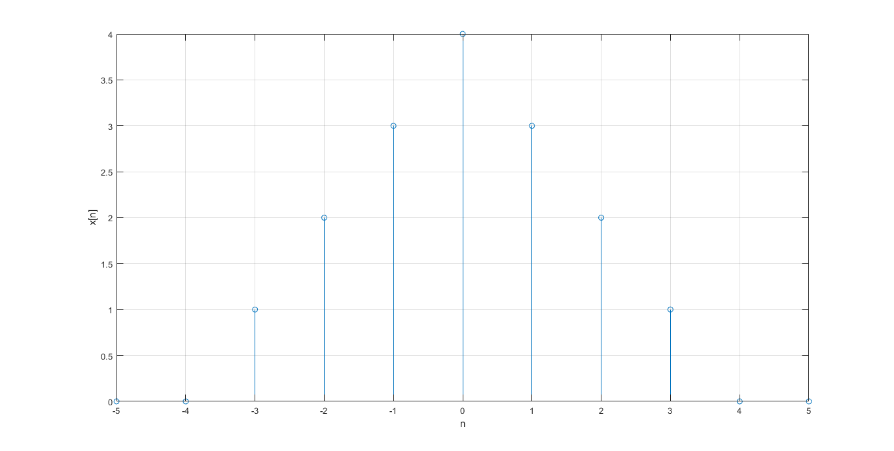
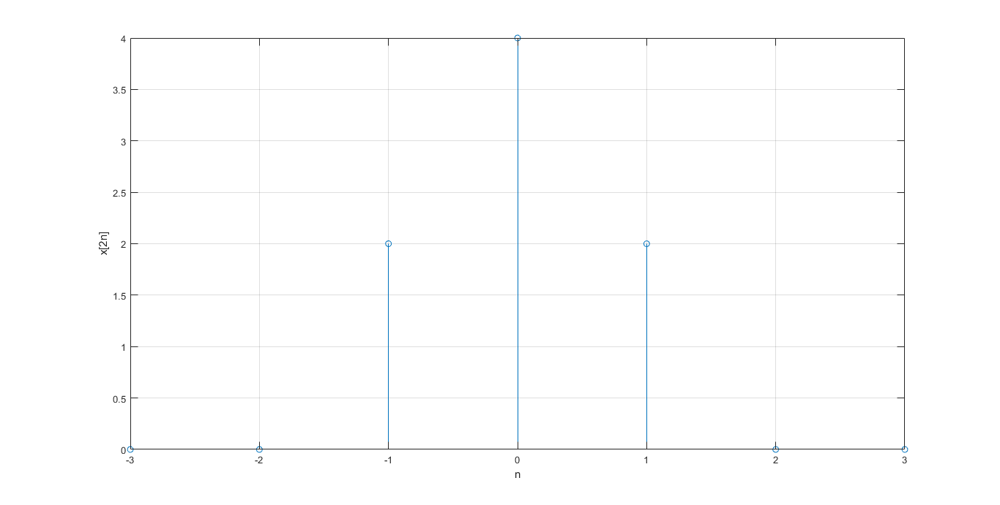
- Expansión: sea la misma señal x[n] a la cual se le aplicará una expansión dividindola por un factor M, quedando la señal de la siguiente forma: x[n/M].
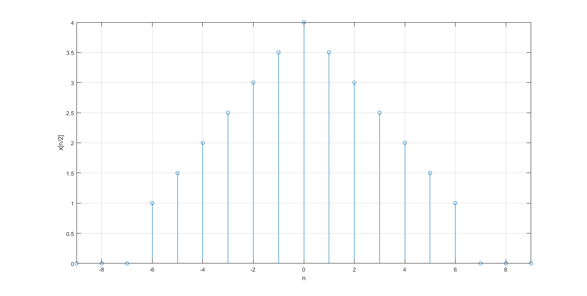
- Inversión: sea una nueva señal y[n] a la que se le aplicará una inversión horizontal, quedando la señal de la siguiente forma: x[-n].
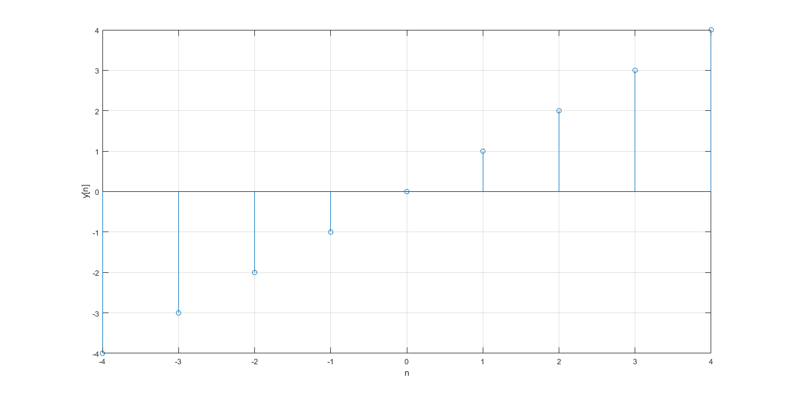
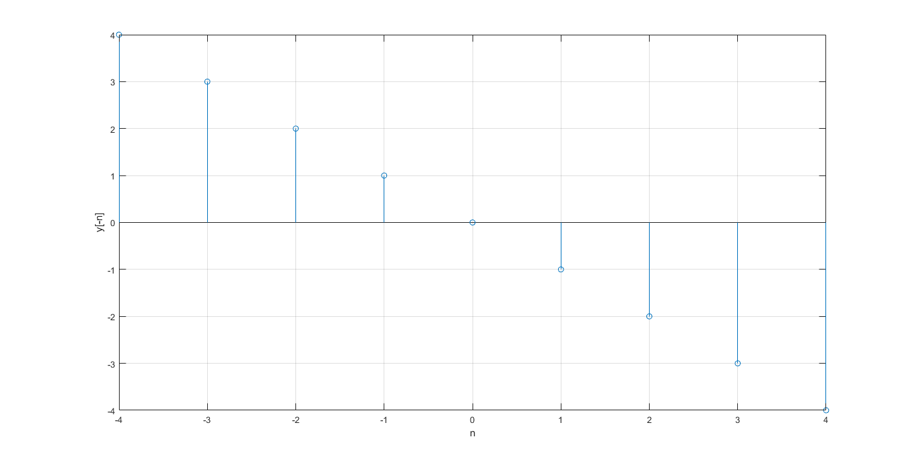
- Inversión y compresión: sea la misma y[n] a la que se le aplicará una inversión y compresión de factor M, quedando la señal de la siguiente forma: y[-Mn].
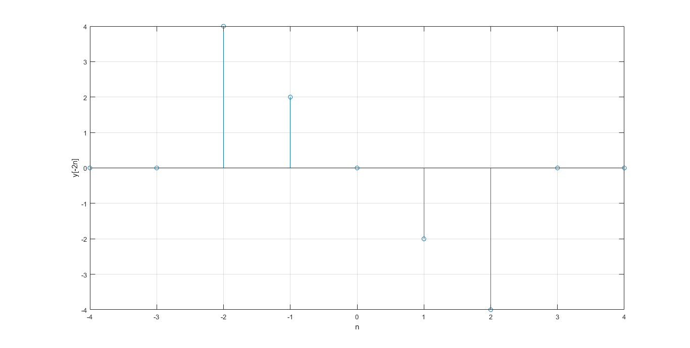
- Inversión y expansión: sea la misma señal y[n] a la que se le aplicará una invesión y expansión de factor M, quedando la señal de la siguiente forma: x[-n/M].
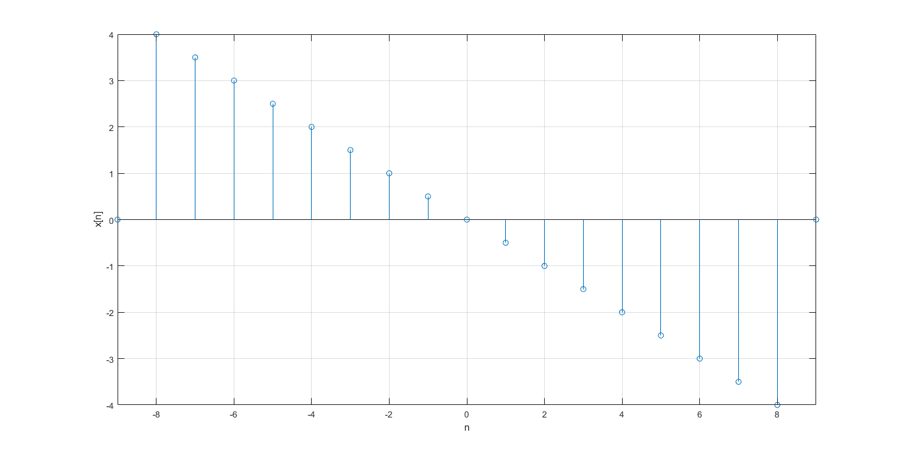
Problema 1
function [fn] = fun1(omega,a) r=2; n=3; fn=(r.^a).*cos(omega.*n)+(r.^a).*sin(omega.*n)*j; end
Problema 2
n=-2:10; a=0.9; xn=@(n) n.*a.*heaviside(n); NtoR(n,xn(n),'Parte 2', 'x[n]');
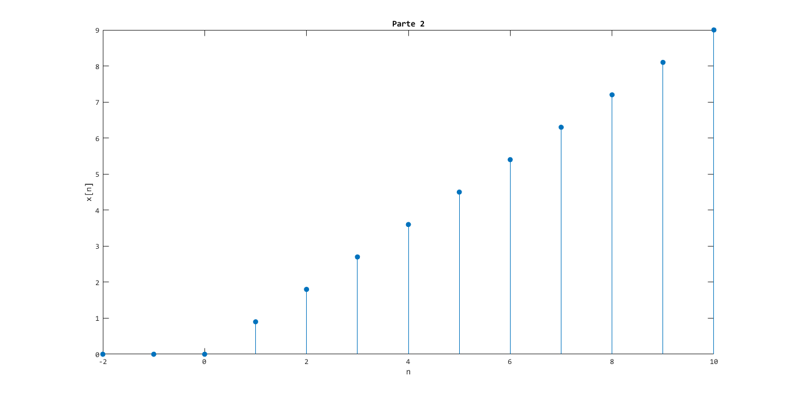
Problema 3
NtoR2(n,real(fn(n)),imag(fn(n)),'Problema 3')
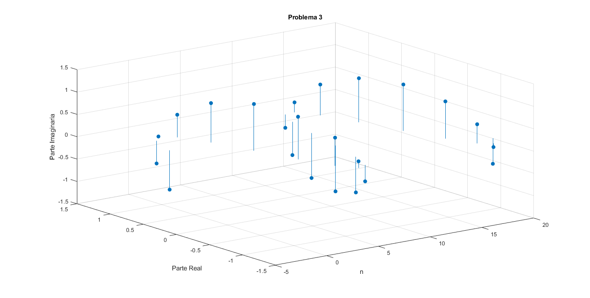
Problema 4
function [energia] = energiadis(tiempo,alturas) energia=sum(alturas.^2); NtoR(tiempo,alturas,'Energía','x[n]'); end
Problema 5
n=-3:3; xn=[-9 -6 -3 0 3 6 9]; energiadis(n,xn)
ans = 252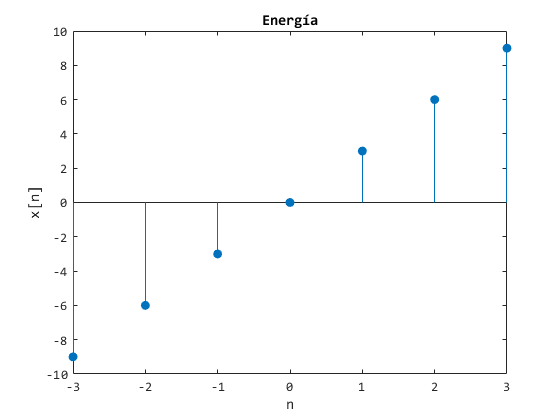
Problema 6
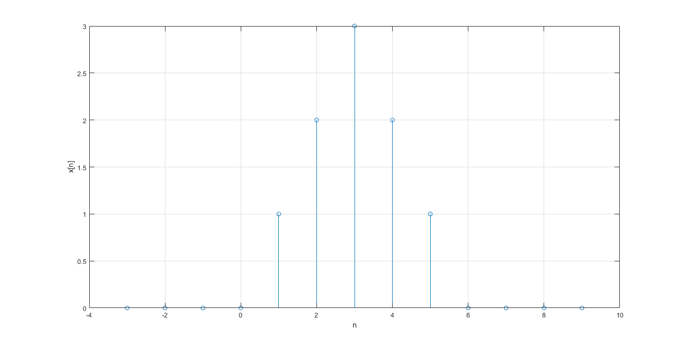
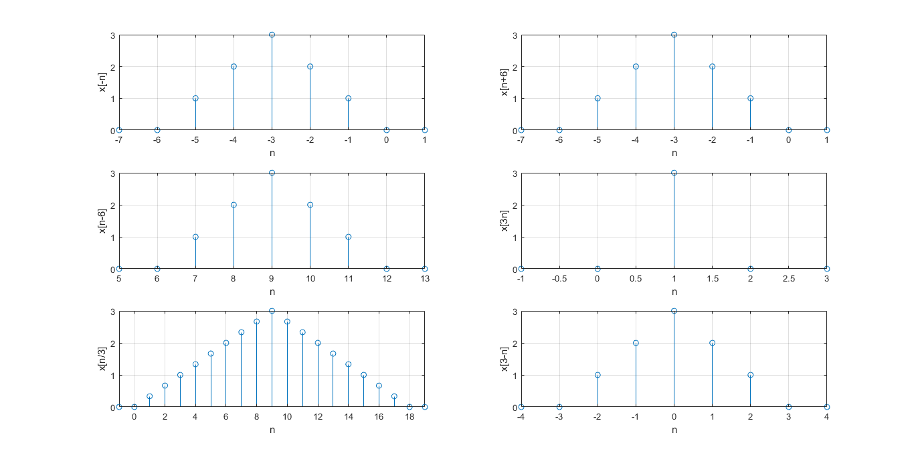
Referencias
B. P. Lathi. (2005). Linear Systems and Signals. 198 Madison Avenue, New York, New York 10016: Oxford University Press.